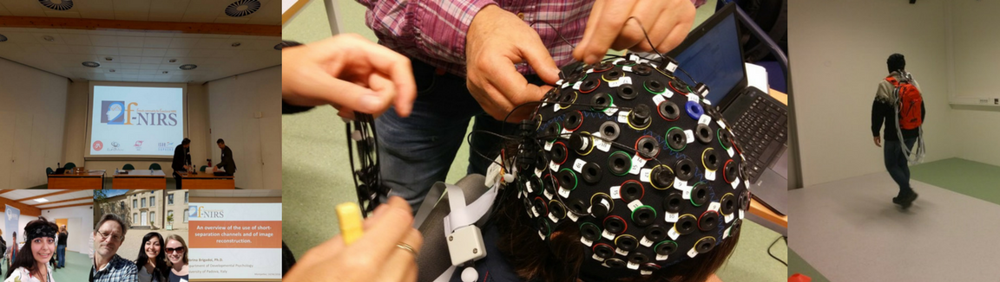

fNIRS Responses of the Brain
Near-infrared spectroscopy (NIRS) is a non-invasive, safe and portable method for monitoring brain activity. The Motion Analysis Laboratory at HiOA has two NIRSport devices from NIRx, which is a freely configurable, continuous wave NIRS system consisting of 8 sources (LED) and 8 detectors. This lightweight (1kg) system combines LED lighting and active sensor technology that provides a portable solution for imaging. By using two different wavelengths (760nm and 850nm LED), the system can measure changes in oxygenated (ΔHbO2) and deoxygenated hemoglobin (ΔHHb) simultaneously. NIRSport also offers the possibility for tandem studies with two separate systems synchronized to operate simultaneously, thus doubling the source-detector density (up to 32 positions on the head).
The study looks at amout of cognitive load in people with transfemural and transtibial amputation during challenging walking conditions. During gait, it is important to consider the sensitivity of fNIRS to hemodynamic and oxygenation changes in the extracerebral (superficial) compartment, since it is a particular confounding factor of this technique.
Non-neuronal driven changes in hemodynamics/oxygenation happening in the cerebral and extracerebral compartment is mainly associated with changes in heart rate (HR), blood pressure, breathing rate, CO2 concentration in the blood, and autonomic nervous system (ANS) activity (ref: Ilias Tachtsidisa and Felix Scholkmann)